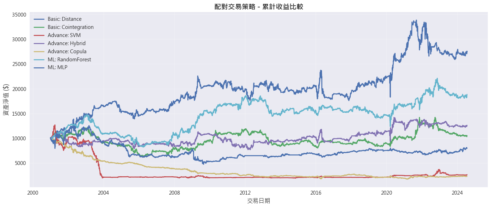
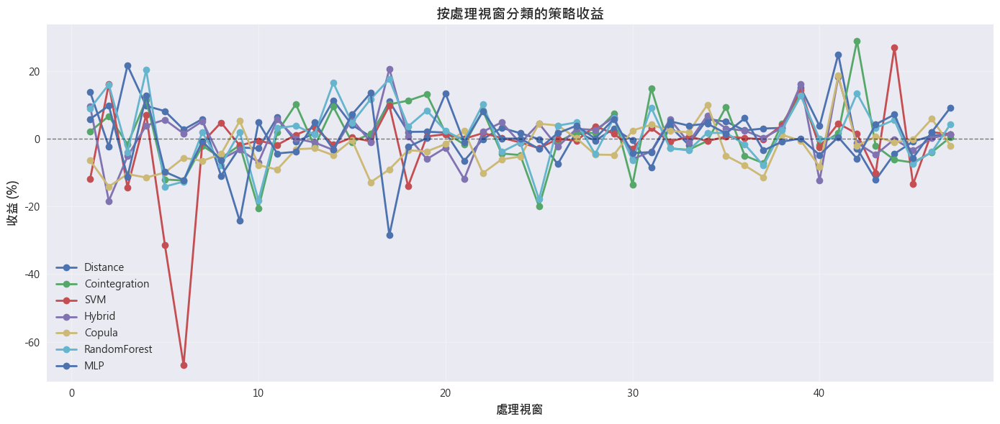

============================================================
🚀 開始進行配對交易回測
============================================================
股票池: 503 檔股票
策略數量: 7 種
------------------------------------------------------------
[統一參數]
num_pairs: 20
transaction_cost_bps: 25.0
entry_sigma: 2.0
entry_z: 2.0
exit_sigma: 0.0
exit_z: 0.0
------------------------------------------------------------
[資料載入] 發現本地緩存 data\sp500_data_2000-01-01_2024-12-31.pkl，正在讀取...
[資料載入] 緩存讀取成功。數據矩陣形狀: (6288, 100)
[訊息] 已生成 47 個滾動回測視窗。
處理視窗 1/47: 2001-01-02 ...
處理視窗 2/47: 2001-07-03 ...
處理視窗 3/47: 2002-01-08 ...
處理視窗 4/47: 2002-07-10 ...
處理視窗 5/47: 2003-01-08 ...
處理視窗 6/47: 2003-07-10 ...
處理視窗 7/47: 2004-01-08 ...
處理視窗 8/47: 2004-07-12 ...
處理視窗 9/47: 2005-01-07 ...
處理視窗 10/47: 2005-07-11 ...
處理視窗 11/47: 2006-01-09 ...
處理視窗 12/47: 2006-07-11 ...
處理視窗 13/47: 2007-01-10 ...
處理視窗 14/47: 2007-07-12 ...
處理視窗 15/47: 2008-01-10 ...
處理視窗 16/47: 2008-07-11 ...
處理視窗 17/47: 2009-01-09 ...
處理視窗 18/47: 2009-07-13 ...
處理視窗 19/47: 2010-01-11 ...
處理視窗 20/47: 2010-07-13 ...
處理視窗 21/47: 2011-01-10 ...
處理視窗 22/47: 2011-07-12 ...
處理視窗 23/47: 2012-01-10 ...
處理視窗 24/47: 2012-07-11 ...
處理視窗 25/47: 2013-01-11 ...
處理視窗 26/47: 2013-07-15 ...
處理視窗 27/47: 2014-01-13 ...
處理視窗 28/47: 2014-07-15 ...
處理視窗 29/47: 2015-01-13 ...
處理視窗 30/47: 2015-07-15 ...
處理視窗 31/47: 2016-01-13 ...
處理視窗 32/47: 2016-07-14 ...
處理視窗 33/47: 2017-01-12 ...
處理視窗 34/47: 2017-07-14 ...
處理視窗 35/47: 2018-01-12 ...
處理視窗 36/47: 2018-07-16 ...
處理視窗 37/47: 2019-01-15 ...
處理視窗 38/47: 2019-07-17 ...
處理視窗 39/47: 2020-01-15 ...
處理視窗 40/47: 2020-07-16 ...
處理視窗 41/47: 2021-01-14 ...
處理視窗 42/47: 2021-07-16 ...
處理視窗 43/47: 2022-01-13 ...
處理視窗 44/47: 2022-07-18 ...
處理視窗 45/47: 2023-01-17 ...
處理視窗 46/47: 2023-07-19 ...
處理視窗 47/47: 2024-01-18 ...
[訊息] 回測已完成，正在生成報告...

====================================================================================================
整體策略績效
====================================================================================================
----------------------------------------------------------------------------------------------------
視窗 1 (2001-01-02): 啟用策略: 7 | 配對總數: 140
視窗 2 (2001-07-03): 啟用策略: 7 | 配對總數: 139
視窗 3 (2002-01-08): 啟用策略: 7 | 配對總數: 140
視窗 4 (2002-07-10): 啟用策略: 7 | 配對總數: 135
視窗 5 (2003-01-08): 啟用策略: 7 | 配對總數: 140
視窗 6 (2003-07-10): 啟用策略: 7 | 配對總數: 140
視窗 7 (2004-01-08): 啟用策略: 7 | 配對總數: 139
視窗 8 (2004-07-12): 啟用策略: 7 | 配對總數: 131
視窗 9 (2005-01-07): 啟用策略: 7 | 配對總數: 140
視窗 10 (2005-07-11): 啟用策略: 7 | 配對總數: 132
視窗 11 (2006-01-09): 啟用策略: 7 | 配對總數: 135
視窗 12 (2006-07-11): 啟用策略: 7 | 配對總數: 134
視窗 13 (2007-01-10): 啟用策略: 7 | 配對總數: 133
視窗 14 (2007-07-12): 啟用策略: 7 | 配對總數: 134
視窗 15 (2008-01-10): 啟用策略: 7 | 配對總數: 135
視窗 16 (2008-07-11): 啟用策略: 7 | 配對總數: 139
視窗 17 (2009-01-09): 啟用策略: 7 | 配對總數: 140
視窗 18 (2009-07-13): 啟用策略: 7 | 配對總數: 140
視窗 19 (2010-01-11): 啟用策略: 7 | 配對總數: 125
視窗 20 (2010-07-13): 啟用策略: 7 | 配對總數: 131
視窗 21 (2011-01-10): 啟用策略: 7 | 配對總數: 110
視窗 22 (2011-07-12): 啟用策略: 7 | 配對總數: 137
視窗 23 (2012-01-10): 啟用策略: 6 | 配對總數: 110
視窗 24 (2012-07-11): 啟用策略: 6 | 配對總數: 114
視窗 25 (2013-01-11): 啟用策略: 7 | 配對總數: 126
視窗 26 (2013-07-15): 啟用策略: 7 | 配對總數: 129
視窗 27 (2014-01-13): 啟用策略: 7 | 配對總數: 140
視窗 28 (2014-07-15): 啟用策略: 6 | 配對總數: 104
視窗 29 (2015-01-13): 啟用策略: 7 | 配對總數: 139
視窗 30 (2015-07-15): 啟用策略: 7 | 配對總數: 120
視窗 31 (2016-01-13): 啟用策略: 7 | 配對總數: 127
視窗 32 (2016-07-14): 啟用策略: 7 | 配對總數: 134
視窗 33 (2017-01-12): 啟用策略: 7 | 配對總數: 137
視窗 34 (2017-07-14): 啟用策略: 7 | 配對總數: 127
視窗 35 (2018-01-12): 啟用策略: 7 | 配對總數: 127
視窗 36 (2018-07-16): 啟用策略: 7 | 配對總數: 127
視窗 37 (2019-01-15): 啟用策略: 7 | 配對總數: 137
視窗 38 (2019-07-17): 啟用策略: 7 | 配對總數: 108
視窗 39 (2020-01-15): 啟用策略: 7 | 配對總數: 128
視窗 40 (2020-07-16): 啟用策略: 7 | 配對總數: 138
視窗 41 (2021-01-14): 啟用策略: 7 | 配對總數: 124
視窗 42 (2021-07-16): 啟用策略: 7 | 配對總數: 133
視窗 43 (2022-01-13): 啟用策略: 7 | 配對總數: 124
視窗 44 (2022-07-18): 啟用策略: 7 | 配對總數: 140
視窗 45 (2023-01-17): 啟用策略: 7 | 配對總數: 140
視窗 46 (2023-07-19): 啟用策略: 7 | 配對總數: 130
視窗 47 (2024-01-18): 啟用策略: 7 | 配對總數: 127
====================================================================================================
處理視窗分析
====================================================================================================
總處理視窗數: 47
[回測績效摘要]
Strategy CAGR Sharpe MaxDD PnL ($)
Basic: Distance 4.40% 0.40 -25.82% $17,579
Basic: Cointegration 0.22% 0.08 -47.99% $538
Advance: SVM -5.53% -0.29 -84.79% $-7,381
Advance: Hybrid 0.98% 0.14 -31.99% $2,590
Advance: Copula -6.09% -0.51 -82.84% $-7,719
ML: RandomForest 2.73% 0.28 -44.46% $8,861
ML: MLP -0.98% -0.01 -62.24% $-2,069| Strategy | CAGR | Sharpe | MaxDD | PnL ($) | |
|---|---|---|---|---|---|
| 0 | Basic: Distance | 4.40% | 0.40 | -25.82% | $17,579 |
| 1 | Basic: Cointegration | 0.22% | 0.08 | -47.99% | $538 |
| 2 | Advance: SVM | -5.53% | -0.29 | -84.79% | $-7,381 |
| 3 | Advance: Hybrid | 0.98% | 0.14 | -31.99% | $2,590 |
| 4 | Advance: Copula | -6.09% | -0.51 | -82.84% | $-7,719 |
| 5 | ML: RandomForest | 2.73% | 0.28 | -44.46% | $8,861 |
| 6 | ML: MLP | -0.98% | -0.01 | -62.24% | $-2,069 |